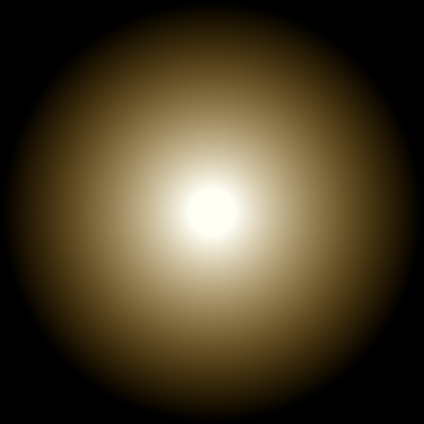
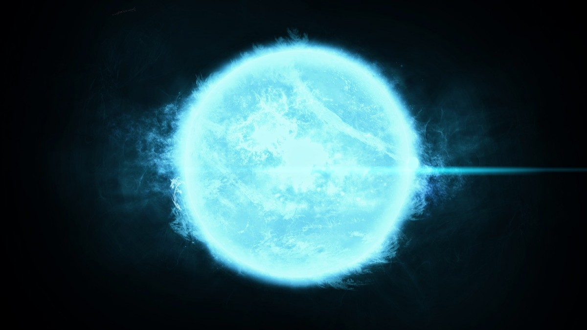

Жұлдыздар

Sun
Күн жүйесінің орталық денесі, Жерге ең жақын жұлдыз. Күн – спектрлік класы G2V, абсолют жұлдыздық шамасы +4,83 болатын сары ергежейлі жұлдыз. Ол біздің Галактика центрінен 9 – 10 кпк қашықтықта орналасқан. Жақын жұлдыздармен салыстырғанда Күн 1,97х104 м/с жылдамдықпен Геркулес шоқжұлдызы бағытында қозғалады; Галактика центрін 230 млн. жылда бір рет айналып шығады. Бүкіл күн жүйесі массасының 99,866%-ы Күнде жинақталған. Жерден Күнге дейінгі орташа қашықтық 1,496x1011 м.
Sirius
түнгі аспандағы ең жарық жұлдыз. Оның атауы гректің Seirios «жарқыраған» немесе «күйдіретін» сөзінен шыққан. Сириус келесі ең жарық жұлдыз Канопустан екі есе дерлік жарық.

Arktur
Күннен шамамен 37,3 жарық жылы (11,4 парсек) қашықтықта (параллакс мәні бойынша есептелген) Бут шоқжұлдызындағы қос жұлдыз. Жұлдыздың жасы шамамен 7,1 миллиард жыл деп анықталған [12]. Бут шоқжұлдызындағы және Солтүстік жарты шардағы ең жарық жұлдыз және түнгі аспандағы Сириус, Канопус және Альфа Кентавр жүйесінен кейінгі төртінші ең жарық жұлдыз. Arcturus жұлдызды ағынына кіреді.
Kanopus
аспанның оңтүстік жарты шарының жұлдызы, Карина шоқжұлдызындағы ең жарық және екінші ең жарық жұлдыз (Сириустан кейін және Күнді есептемегенде) аспанда көрінетін жарқыраған Canopus - сарғыш-ақ аса алып жұлдыз. Ол оңтүстік жарты шарда көрінеді және бар көлбеу −52°42′ (2000 ж.) және оңға көтерілу 06h24.0m. Canopus, Hipparcos астрометриялық спутнигіне сәйкес, 310 жарық жылы қашықтықта (96 парсек немесе 2,96 квадриллион километр) біздің Күн жүйесінен (10,43 ± 0,53 мыңдық параллакс өлшемдеріне негізделген доға секундтары). Канопустың массасы шамамен 8-9 деп есептеледі күн, ал радиусы күннен 65 есе асып түседі.
